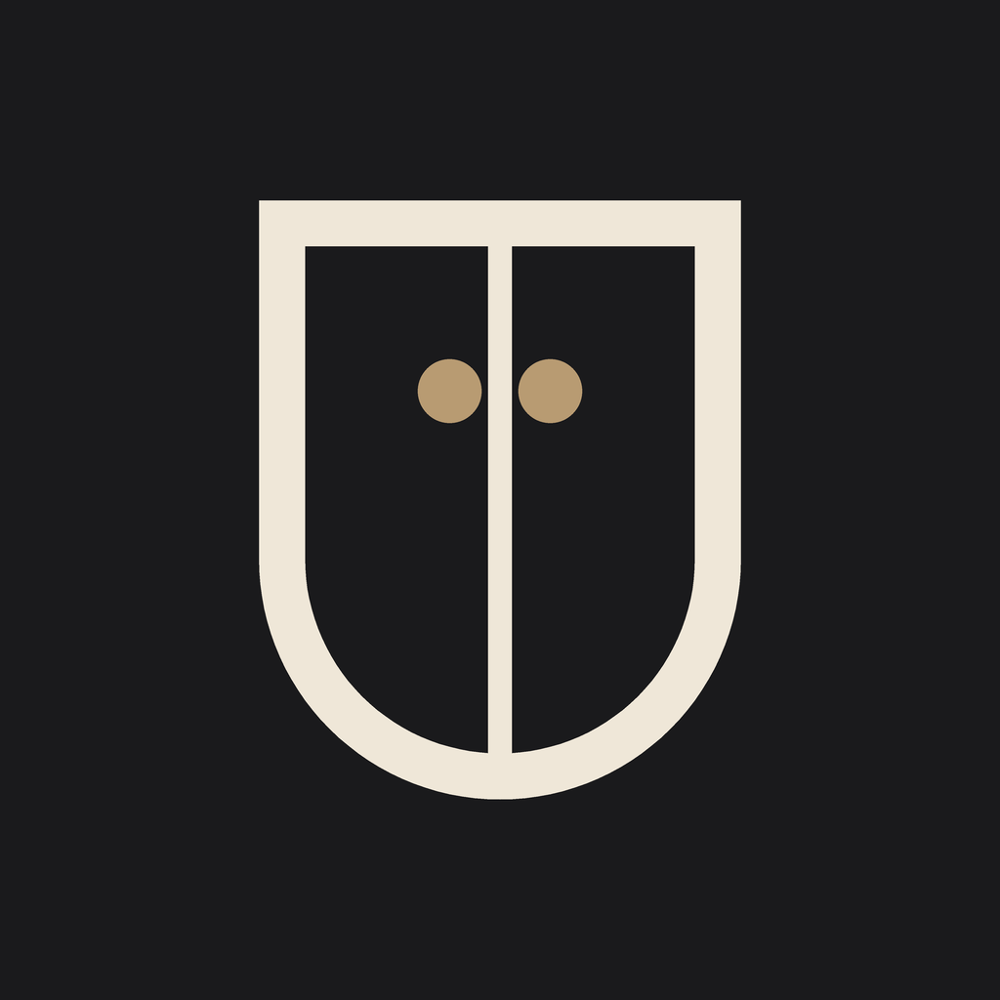

Destek
Üstümde · Yardım ve iletişim
Üstümde ile ilgili bir sorun yaşarsan, bir önerin ya da sorun olursa ustumde.app@gmail.com adresine yaz. Yazarken telefonunun modelini ve iOS sürümünü de eklersen daha hızlı yardımcı olabilirim.
Verilerim nerede duruyor?
Dolabın, fotoğrafların ve kombinlerin yalnızca telefonunda saklanır. Hesap ya da sunucu yoktur; bu yüzden verilerini biz göremeyiz ve senin yerine geri getiremeyiz.
Telefonumu değiştireceğim, dolabım ne olacak?
Eski telefonda Profil > Yedekleme > "Yedek oluştur" ile yedek dosyasını iCloud Drive’a ya da Dosyalar’a kaydet. Yeni telefonda Üstümde’yi kurup Profil > Yedekleme > "Geri yükle" ile o dosyayı seç.
Arka plan düzgün silinmedi
- Kıyafeti düz ve sade bir zemine ser (yatak örtüsü, kapı, duvar).
- İyi ışıkta, ekranı dolduracak kadar yakından çek.
- Kıyafetle zemin aynı renkteyse farklı renkte bir zemin dene.
Kıyafet mankene tam oturmadı
Sanal denemede "Otomatik hizala"ya dokun. Hâlâ olmadıysa parçaya dokunup yanındaki çubukla büyüt ya da küçült, "İnce ayar" ile yerini değiştir.
Sesli komut, hava durumu ya da bildirimler çalışmıyor
Telefonun Ayarlar > Üstümde bölümünden ilgili izni aç: sesli komut için Mikrofon ve Konuşma Tanıma, hava durumu için Konum, hatırlatmalar için Bildirimler.
Bütün verilerimi nasıl silerim?
Profil’in en altındaki "Tüm verilerimi sil" ile dolabını, fotoğraflarını, kombinlerini ve ayarlarını kalıcı olarak silebilirsin. Uygulamayı telefondan silmek de bütün verileri siler.
İletişim
E-posta: ustumde.app@gmail.com